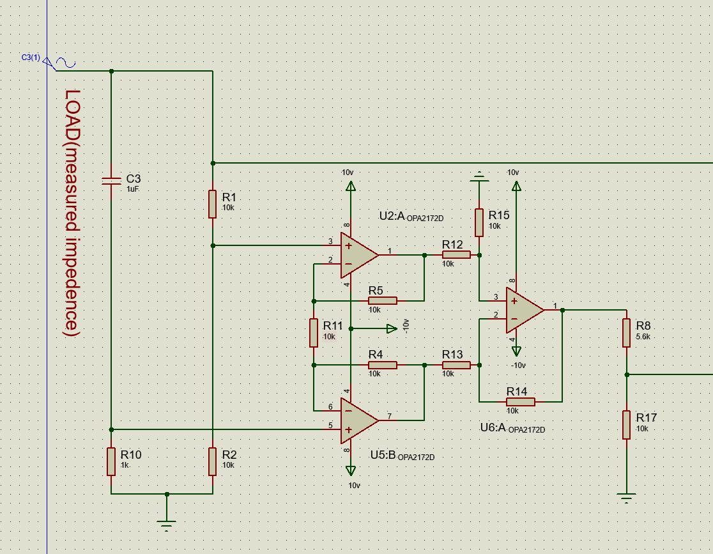
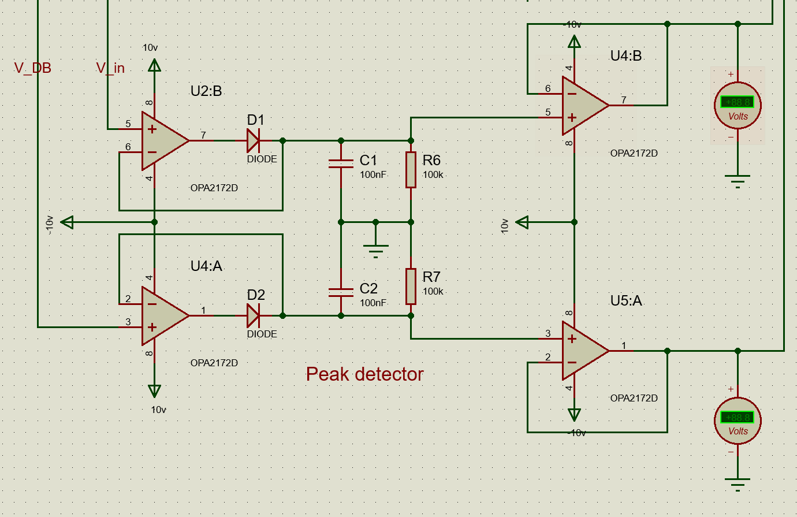
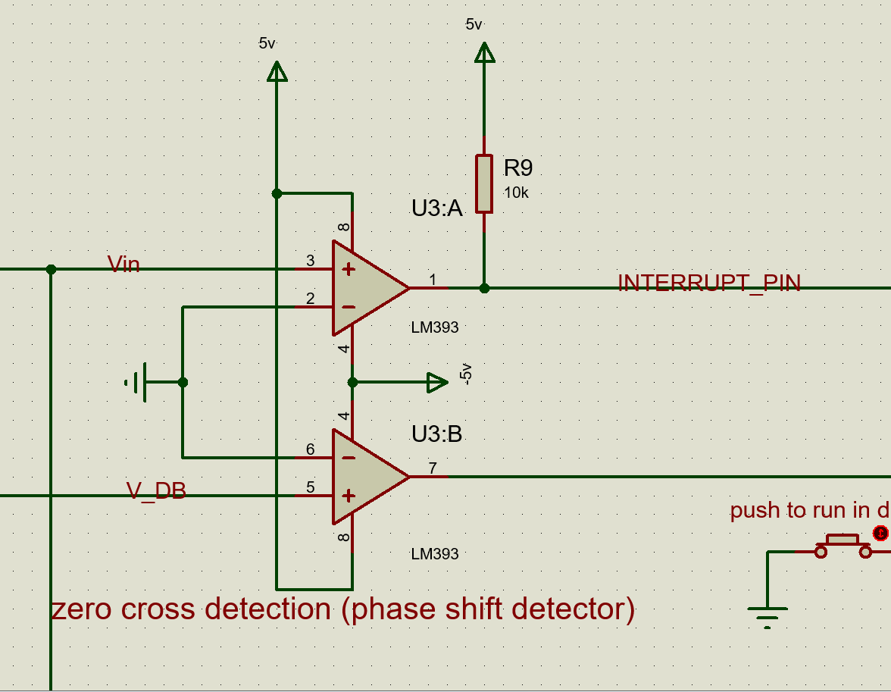

Open source · C / AVR
github.com/muhammadzareii/avr-impedance-meterOverview
An impedance meter measures the complex electrical impedance Z = |Z|·e^(jθ) = R + jX of an unknown component at a specific test frequency. Most bench LCR meters use dedicated ICs; this project implements the same measurement from first principles on an ATmega16 using a bridge circuit, precision analog front-end, and digital signal processing in firmware.
The fundamental approach is the AC bridge: the unknown impedance Z_x is placed in one arm of a balanced Wheatstone-type bridge driven at 10 kHz. At balance, the voltage across the bridge diagonal is zero. In this design, rather than manually balancing the bridge, the bridge is unbalanced intentionally and the imbalance voltage is measured — its amplitude gives |Z_x| and its phase relative to the drive signal gives θ.
Circuit Architecture
Signal Chain Detail
Test Signal Generation
The ATmega16 generates a 10 kHz square wave using its built-in PWM timer. A first-order RC low-pass filter converts this to an approximate sine wave with sufficient amplitude for the bridge. The 10 kHz frequency is chosen as a compromise: high enough to measure reactive components (capacitors, inductors) over a useful range, low enough for reliable zero-crossing detection with a standard comparator.
Magnitude Measurement — Peak Detector
The bridge imbalance voltage (proportional to Z_x) is amplified by the OPA2172D differential amplifier. A diode-capacitor peak detector then captures the amplitude envelope. The OPA2172D is chosen for its rail-to-rail output and low offset voltage (<25 μV), which is important when the bridge approaches balance (small imbalance signal). The peak detector output is read by the ATmega16 ADC (10-bit, 5V reference).
Phase Measurement — Zero-Crossing Detector
The phase between the bridge imbalance voltage and the reference signal is measured by time-of-flight between their zero crossings. Each zero crossing triggers an edge on an MCU digital input via the LM393 comparator. The ATmega16 input capture timer records the time difference Δt; the phase angle is then:
The 16-bit input capture timer at F_CPU = 8 MHz gives a time resolution of 125 ns, corresponding to a phase resolution of 0.45° at 10 kHz — adequate for most passive component measurements.
Polar-to-Rectangular Conversion
The firmware converts the measured polar form (|Z|, θ) to rectangular form (R, X) using fixed-point trigonometry (look-up table for sin/cos to avoid floating-point overhead on the AVR):
Both polar and rectangular forms are displayed on a 16×2 LCD connected via 4-bit parallel interface.
Results and Figures



